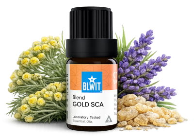

Hojení jizev vyžaduje čas a trpělivost. Esence nejsou zázrak, ale při pravidelném používání mohou výrazně podpořit přirozený proces regenerace. Buďte ke svému tělu laskaví. Výsledky přicházejí s pravidelností — dopřejte si čas.

pro regeneraci a hojení pokožky
Jizvy po operacích, porodní strie, popraskaná kůže nebo starší poranění. Ukáži vám, jak přirozeně podpořit regeneraci pokožky, změkčit jizevnatou tkáň a postupně sjednotit vzhled pleti.

Hojivá směs přímo pro péči o jizvy, strie a poškozenou pokožku.
Podporuje elasticitu, regeneraci a postupné vyhlazování — při pravidelné aplikaci pomáhá změkčit ztvrdlá místa.
💧 Jak použít: zředěný v nosném oleji (např. jojobový) nanes na jizvu nebo strie jemnými krouživými pohyby — ideálně 2× denně, pravidelně po dobu několika týdnů.
Zjistit více →💧 Jak použít: přidej 1–2 kapky do nosného oleje a nanes přímo na jizvu jemnými krouživými pohyby.
Chci regenerovat💧 Jak použít: přidej 1–2 kapky do nosného oleje nebo přímo na jizvu — levandule je jeden z mála olejů vhodných i bez ředění.
Chci zklidnit a zahojit💧 Jak použít: zředěný v nosném oleji nanes na hojící se místo — nevhodný na čerstvé otevřené rány.
Chci podpořit hojeníHojení jizev vyžaduje čas a trpělivost. Esence nejsou zázrak, ale při pravidelném používání mohou výrazně podpořit přirozený proces regenerace. Buďte ke svému tělu laskaví. Výsledky přicházejí s pravidelností — dopřejte si čas.
Mohlo by vás také zajímat:
🌿 Všechny esence, které na tomto webu doporučuji, jsou od BEWIT. Jako registrovaný zákazník můžete nakupovat se slevou až 50 % na vybrané produkty.
Registrace u BEWIT zdarma →